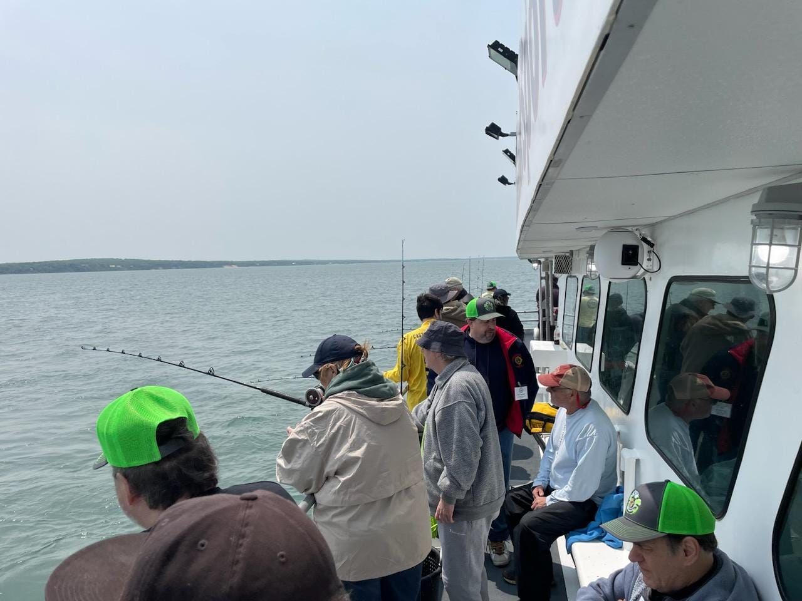
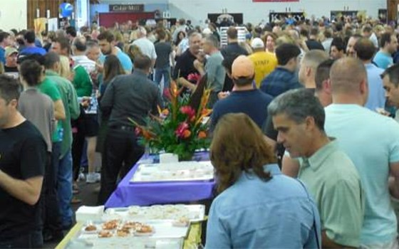

The Berlin Lions Charities is a 501c3 allowing the Berlin Lions to raise money to give back to our community through various fundraising events such as the Berlin Fair, and the Berlin Lions Wine and Beer Tasting

The Visually Impaired Persons (VIP), is an annual event sponsored by the Berlin Lions Club, allowing individuals to compete for free.

The Wine and Beer Tasting is a annual fundraiser and community event featuring live music and a large selection of wine and local beers for your sampling pleasure!
Donations & Fundraising allows the Berlin Lions Club Charities to support a long list of local community organizations & host community events including but not limited to: